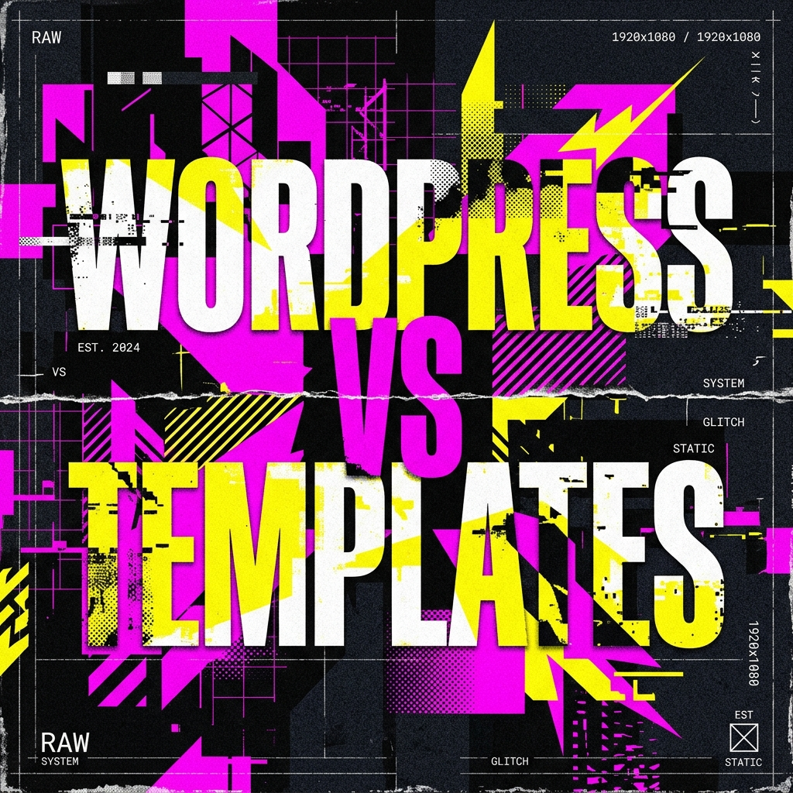

Why Custom WordPress Development Beats Pre-made Templates in 2026
Let's address the elephant in the room. You can buy a WordPress theme for $50 right now. It looks good in the demo, it has 400 sliders, and it promises to do everything from selling t-shirts to booking flights. So why on earth would you pay a developer for custom WordPress development?
1. The Bloat Trap
Commercial themes are built to sell to *everyone*. To do that, they include every feature imaginable: page builders, massive icon libraries, 10 slider plugins, and complex layout grids. You might use 5% of these features, but your visitors' browsers still have to download the other 95%.
In 2026, Core Web Vitals are a massive ranking factor for Google. If your site takes 4 seconds to load because it's loading a 2MB CSS file from a bloated theme, you are bleeding conversions and SEO rankings.
2. Custom Code Means Absolute Control
When I build a custom WordPress site, I start with a blank slate. We code exactly what you need—nothing more, nothing less.
- Zero unused CSS or JavaScript.
- Advanced Custom Fields (ACF) set up exactly for your data structures.
- Security through obscurity (hackers target known vulnerabilities in popular commercial themes).
3. Scalability Without Tears
Have you ever tried to update a commercial theme two years after you bought it, only to find the author abandoned it, and the update breaks your entire layout?
Custom themes are built around WordPress core standards. They are lightweight and modular. When a business scales, a custom architecture allows a developer to jump in and add an API integration or a custom user portal without fighting a rigid page builder.
The Rajkot Perspective
As a WordPress developer based in Rajkot, Gujarat, I've seen countless local and international businesses burn money on 'quick fix' templates only to hire me six months later to rebuild it properly because it wouldn't scale. Do it right the first time.
The Verdict
Templates are for hobbies. Custom WordPress development is for businesses that view their website as a revenue engine. If you want a digital presence that loads in milliseconds, perfectly matches your brand identity, and ranks on Google, you need custom code.